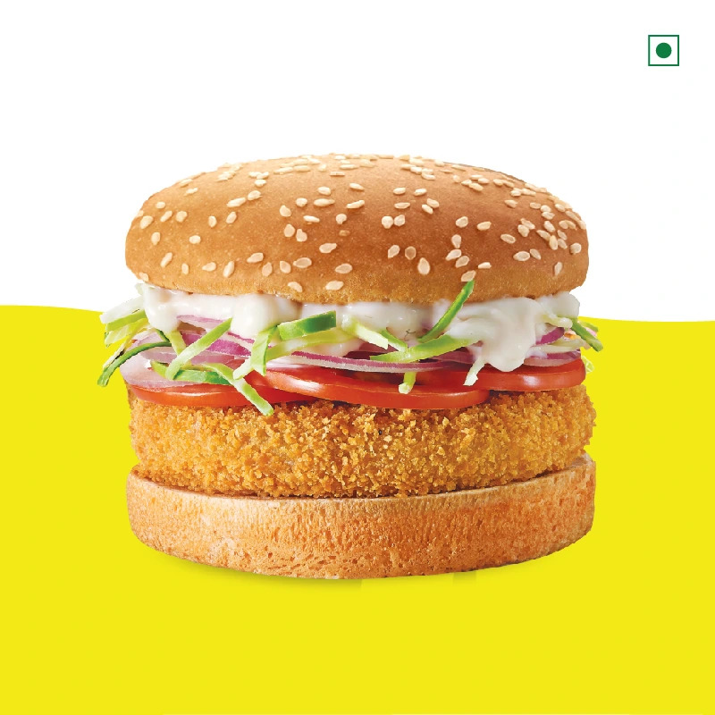
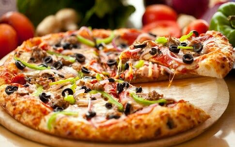

Welcome to Indian zayka
Experience the finest flavors in every bite!
Explore MenuOur Menu
Pure Veg and Tasty Food

Chow mein
Rs.150 Burgur
Rs.99 Pizza
Rs.299
Momos
Rs.89About Us
Welcome to Indian zayka, where passion meets flavor! Our journey began in 2010 with a vision to create a dining experience that goes beyond just good food. We believe in crafting moments and memories through our delicious offerings and warm hospitality.
At Indian zayka, we source the finest ingredients, blend traditional and modern culinary techniques, and infuse every dish with love. Whether you're here for a casual meal with friends or a special celebration, our menu caters to all tastes and preferences.
Come join us on this culinary adventure, where each bite is a celebration of taste and each moment is an opportunity to create lasting memories. Thank you for being a part of our delicious journey!